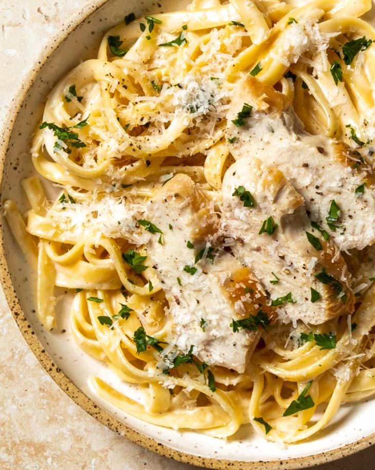
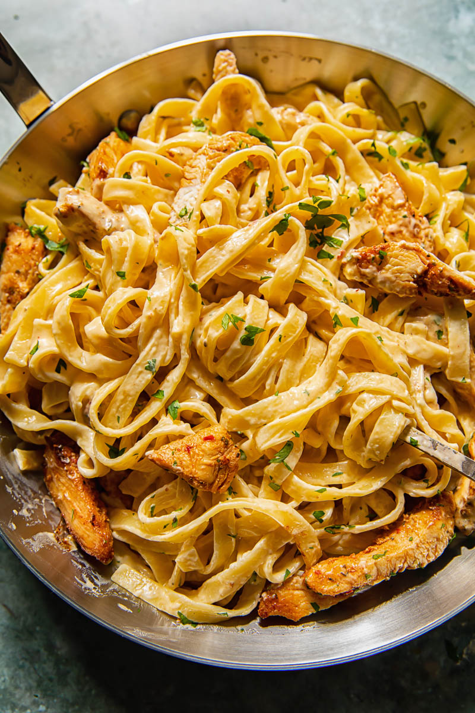
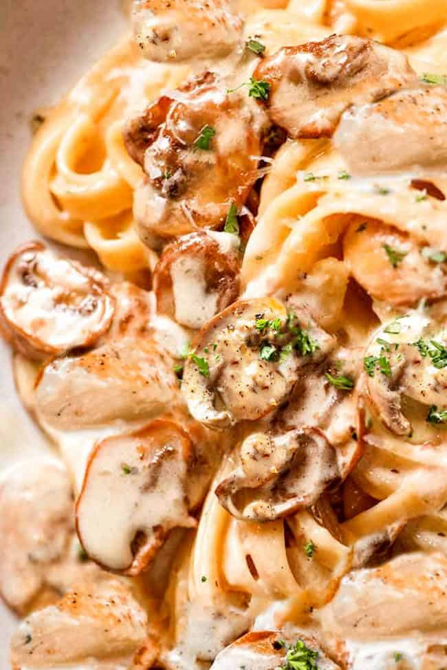
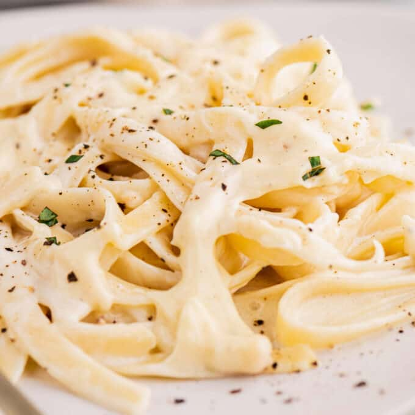
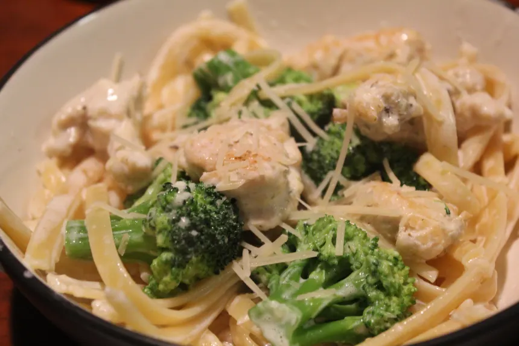
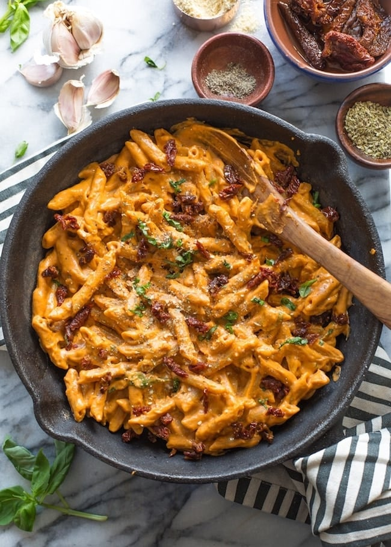

Classic Chicken Alfredo
Rich and creamy traditional Alfredo.
Spicy Cajun Alfredo
A bold twist with Cajun seasoning.
Mushroom Chicken Alfredo
Earthy mushrooms in a creamy sauce.
Garlic Herb Alfredo
Infused with garlic and fresh herbs.
Broccoli Chicken Alfredo
Healthy greens meet creamy Alfredo.
Sun-Dried Tomato Alfredo
A tangy and vibrant Alfredo variation.
